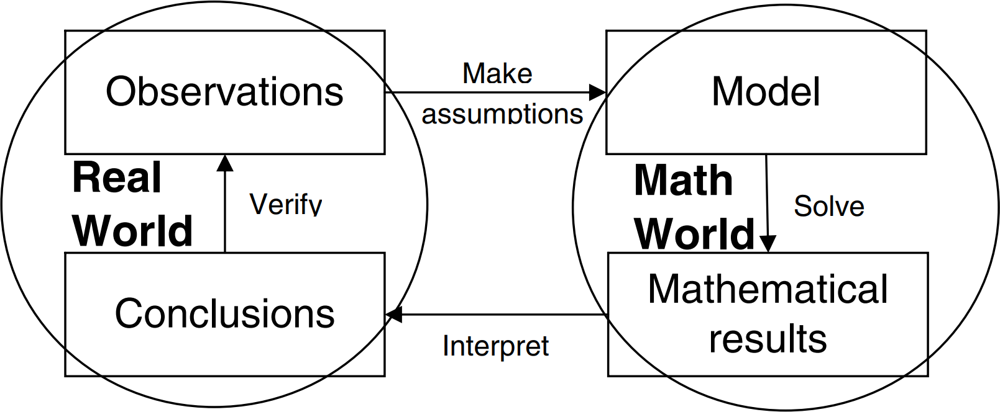

Section 5.3 Process
We will illustrate the process of mathematical modeling with an example of modeling the number of bacteria in a Petri dish as described in Section 5.2.
- Step 1:
-
State the question to be answered.
In many situations, this step is almost trivial; in others it is the most difficult part of the process. The question should be narrow enough to make the problem manageable, but not too narrow so that the problem is trivial. Initially we may want to focus on a narrow question, and then use the knowledge gained to broaden the question at a later time. The question should also be stated in precise mathematical terms so it can easily be translated into mathematical notation.
In this example we will answer the question “How long will it be until the number of bacteria in the dish reaches 600?”
- Step 2:
-
Select the modeling approach.
In this step we determine the form of the model. In some situations this is easy to do; in others we may have several reasonable choices. Making the right choice requires at least some knowledge of all the possibilities. It also depends on the nature of the assumptions being made.
Often times this step begins with some simple observations. Note that we started with 500 bacteria. After 1 day, it increased by 25, which is 5% of 500. After a second day it increased by 26, which is approximately 5% of 525. The growth rate (or change per day) appears to be relatively constant. This suggests a simple relationship between the populations on consecutive days:
\begin{equation*} \text{Population on one day}=\text{Population on previous day } + 5\% \end{equation*}This relationship indicates that we may be able to derive a simple equation to model the population.
- Step 3:
-
Define variables and parameters.
Variables are quantities that could change within a problem. Parameters are quantities that are constant within a problem, but that could change between problems of the same type. The first part on this step is to determine what variables and parameters are involved. This may be simple and obvious, or very complicated. Often times there are potentially hundreds of quantities involved. To make the model manageable, we need to make assumptions as to which are the most important and which can be ignored. At a later time we could add additional variables and parameters to refine the model.
In this example, variables include:
- Time
- Population
- Temperature
- Amount of food present
- Amount of available space in the dish
These are all values that change as the population grows. Since the initial observation did not give any information on temperature, food, or space, we will ignore these variables and focus on only time and population.
Possible parameters to consider include:
- The initial population
- Growth rate (we will assume this is constant)
- Size of the dish
- Initial amount of food
These are all values that are constant once we put the bacteria in the dish and allow them to grow. But if we consider a different dish with a different population of bacteria, they could change. Again, since we don’t know anything about the size of the dish or the amount of food, we will ignore these parameters.
The second part of this step is to choose symbols to represent the variables and parameters. For this example, let
\begin{equation*} \begin{aligned} n & = \text{time in days from the present }(n = 0, 1,\dots) \\ r & = \text{the growth rate (in decimal form)} \\ a_n & = \text{the population at the beginning of day }n \\ a_0 & = \text{the initial population} \end{aligned} \end{equation*} - Step 4:
-
State the assumptions.
Making assumptions is an essential aspect of creating a valid and manageable model. Assumptions fall into many different categories. Some are used to simplify the model, such as those used to select the important variables. Some are needed to define relationships between the variables because the precise relationships are not known. Others are needed to determine the values of parameters when the exact values are not known.
Clearly stating the assumptions is an important part of interpreting and presenting the results. The results of a model are only as valid as the underlying assumptions. If the assumptions are unreasonable, then the conclusion will be unreasonable regardless of the precision of the mathematical analysis.
In this problem, we have already chosen to ignore temperature, size of the dish, and many other possible variables and parameters. This is a simplification. Furthermore, we will assume that the population growth is constant (i.e. the population will increase 5% each day).
- Step 5:
-
Formulate the model.
This is where the “mathematics” starts. We have observed that the number of bacteria on day 1 is equal to the number on day 0 plus 5%. The number on day 2 is equal to the number on day 1 plus 5%, etc. In mathematical notation using our variables and parameters, we have
\begin{equation*} \begin{aligned} a_1 & = a_0 + r\,a_0 = (1+r)a_0 \\ a_2 & = a_1 + r\,a_1 = (1+r)a_1 \\ & \vdots \\ a_{n+1} & = a_n + r\,a_n = (1+r)a_n \end{aligned} \end{equation*}This forms a recursively defined sequence. To form an explicit description of \(a_n\) in terms of \(n\text{,}\) note that
\begin{equation*} \begin{aligned} a_1 & = (1+r)a_0 \\ a_2 & = (1+r)a_1 = (1+r)(1+r)a_0 = (1+r)^2 a_0 \\ a_3 & = (1+r)a_2 = (1+r)(1+r)^2 a_0 = (1+r)^3 a_0 \\ & \vdots \\ a_n & = (1+r)^n a_0 \end{aligned} \end{equation*}This last equation is our model.
- Step 6:
-
Solve the model and state the solution.
Here we use the term “solve” loosely. Solving a model may involve solving a single equation, as in this example, it may involve constructing a graph and qualitatively describing its behavior, or it may involve running a simulation several hundred times and summarizing the resulting data. The meaning of the term solve is relative to the type of model.
In this example, the question is “when will the population be 600?” In terms of our variables, this can be stated as “find \(n\) such that \(a_n = 600\text{.}\)” This yields the equation
\begin{equation*} 600 = (1+0.05)^n\cdot 500 \end{equation*}Solving this equation using logarithms yields \(n\approx 3.7\text{.}\) This means that at the beginning of the fourth day we will have over 600 bacteria. This is our solution.
Often times the results of a model are used to guide decisions. In many practical situations, such as in business or the military, the person doing the modeling is not the final decision maker. The final decision maker is a CEO or officer who is not a mathematician. Therefore, the solution should be stated in as non-technical language as reasonably possible.
- Step 7:
-
Verify the model.
Verification is necessary to test the reasonableness of our assumptions. Typically we verify a model by comparing it to some real world data. Let’s suppose we let the bacteria grow for a total of 7 days and collect the data in Table 5.3.1. Next to the actual observed populations are the populations predicted by the model.
We see that on day 4, the actual population is just below 600. Even though the predicted population does not equal the actual population, our solution of 4 days is reasonable.
Note that on days 5 and 6, the actual and predicted populations differ considerably. The data indicates that the growth rate slows down. This means that our assumption of a constant growth rate is incorrect.
Table 5.3.1. Actual Predicted Day Population Population 0 500 500 1 525 525 2 551 551 3 575 579 4 598 608 5 610 638 6 620 670 Our model is accurate up to day 4, but inaccurate for later days. This example illustrates that we must be very cautious about using data from the past to make predictions about the future.
- Step 8:
-
Refine the model.
Refine means to improve the model in some way. One way to do this is to add variables that we chose to ignore in step 3 to make a more accurate model. Another way is to generalize the model so that it can be used to solve other similar problems. Either one will require us to repeat steps 3 – 7 to some degree.
We have already noted that the data indicates the growth rate slows down over time. This could be a result of diminishing food supplies or room to grow. These are two variables we chose to ignore.
One possible refinement is to redo the model incorporating these two variables. This would require additional observations and data to determine how these variables are related to the other variables. Another possible refinement is to use the available data to model a decreasing growth rate. We will illustrate how to do this in the next chapter.
A simple diagram that illustrates the basic process of mathematical modeling is given in Figure 5.3.2. The process begins in the upper left-hand corner with observations (or data). From this we get the basic problem we want to solve. We then make assumptions, construct the model, solve it using appropriate mathematical tools, and obtain a mathematical result. Then we must interpret the mathematical result in light of the assumptions to make our conclusions. We then verify the model using more observations.
Figure 5.3.2. This figure also illustrates the cyclic nature of mathematical modeling. We rarely stop once we answer the original question. We continually repeat the process, to some extent, to test, refine, and implement the model.
The right half of this diagram is done in the “math world” and the left half is done in the “real world.” In the math world, we use the absolute certainty of mathematics. The real world contains no such certainties. Making assumptions and interpreting are necessary steps to move between these two worlds.